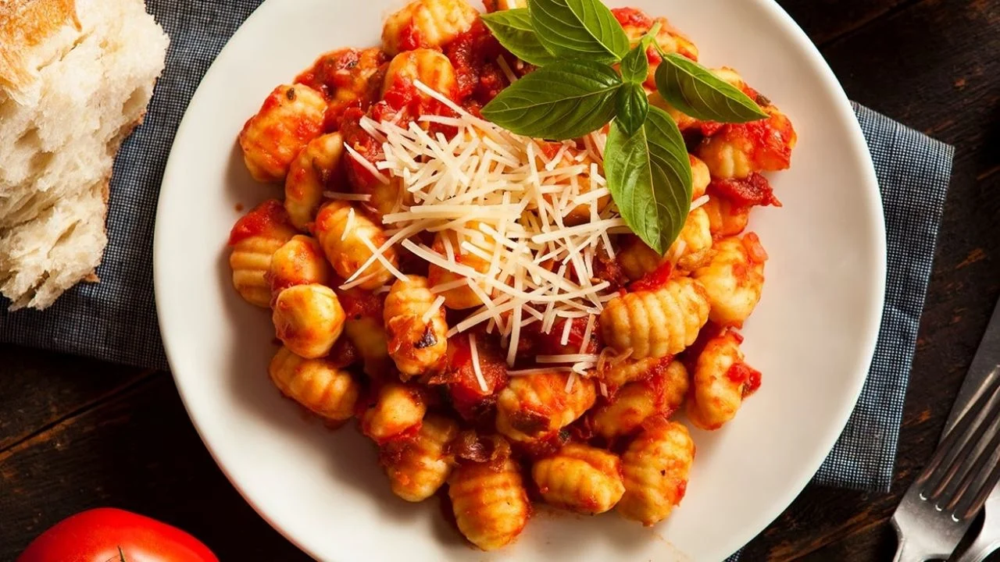

Ñoquis de Papa
Clásicos del 29, los ñoquis son suaves y esponjosos, ideales para combinar con salsa boloñesa, fileto o manteca y queso.
Autor
Pedro Pascal

Pedro Pascal es un chef apasionado por la cocina creativa y la fusión de sabores. Con años de experiencia en reconocidos restaurantes internacionales, ha logrado combinar técnicas tradicionales con innovaciones modernas, creando platos que no solo sorprenden al paladar, sino que también cuentan historias.
Ingredientes
Para los Ñoquis
- 1 kg de papas
- 300 g de harina
- 1 huevo
- Sal, pimienta y nuez moscada
Receta
- Hervir las papas con cáscara hasta que estén tiernas.
- Pelar y hacer puré mientras aún estén calientes.
- Agregar sal, pimienta y una pizca de nuez moscada.
- Incorporar el huevo y la harina poco a poco hasta formar una masa suave.
- Dividir en rollitos y cortar en pequeños trozos del tamaño de un bocado.
- Pasar por un tenedor para dar forma.
- Hervir en agua con sal hasta que floten.
- Servir con salsa a elección y espolvorear queso rallado.
Califica esta receta y deja tu opinión
Selecciona una calificación